策略矩陣分析工具 操作手冊
本手冊依工具的六個步驟（tab）分章，示範如何畫出一張策略矩陣。範例使用虛構的醫材公司「見安醫材」與內建範例「網路書店 A 公司」；內文中的「按鈕名稱」與畫面上的文字完全相同，方便對照。
📺 教學影片
想先看一遍整體操作，可以直接看影片。
1. 快速開始（六個 tab 走一遍）
工具把整個策略分析拆成六步，每一步是頁面上的一個 tab。照著 tab 從左到右做，就能完成一份策略矩陣分析：
- ① 經營流程：填「策略名稱」，用「📋 載入範本…」選一個接近你產業的價值鏈，再改名、增刪方塊；完成後按 📐 展開到策略矩陣，價值鏈的每個單元會變成矩陣的一欄。
- ② 策略點描述：自動切到「📝 描述策略點」模式，點矩陣上的格子，在矩陣右側的面板（窄螢幕在下方）填寫每個策略點的現況。
- ③ 策略構想：自動切到「✏️ 繪製箭頭」模式。在「策略構想」區新增或改名構想（最多 8 個），點起點格（變黃）、再點終點格就畫出一條箭頭；替箭頭寫補充說明、標策略要素、圈成模組。
- ④ 前提驗證：在箭頭上加前提並標成立度，這一頁會彙整成 SWOT 與對陣點。
- ⑤ 行動計畫：按 ✨ 從箭頭產生行動項目，再補負責單元與期程。
- ⑥ 策略控制：挑出關鍵前提，填觀察指標與燈號。完成後到頁面上方的「專案」列按 📊 匯出 PPTX 或 💾 存檔。
每個 tab 頂端都有一張「📘 教材說明」卡，說明這一步在教科書裡的目的與檢查點（見下一節）。想先看完整的成品，可以在「專案」列選 📚 載入範例…。


2. 分步引導與教材說明卡
「專案」列下方的 tab 列，把分析拆成六步：① 經營流程、② 策略點描述、③ 策略構想、④ 前提驗證、⑤ 行動計畫、⑥ 策略控制。點一個 tab，下方只顯示這一步要用的區塊。
完成度
- 每個 tab 顯示百分比、進度條與一行摘要（例如「已描述 8／81 格」「5 項前提、2 待驗證」）；達 100% 時編號換成 ✓。
- 右下角的「整體 %」是六步的平均。
- 窄螢幕時，六個 tab 會排成 3×2。
切 tab 時會自動做的事
- ② 到 ⑥ 共用同一張策略矩陣（① 不顯示矩陣），切 tab 時矩陣不會重畫或清掉。
- 模式會跟著切換：② 切到「📝 描述策略點」、③ 切到「✏️ 繪製箭頭」、④⑤⑥ 切到「👁 檢視模式」，避免誤點畫出箭頭。切過去之後仍可自己再換模式。
- 目前所在的 tab 會記在存檔裡，下次開啟會回到同一步。
教材說明卡
每個 tab 第一塊是「📘 教材說明」卡，整理自《策略管理新論》：
- 左欄：這一步的目的、一兩句書上原文（附頁碼）與延伸閱讀頁碼。
- 右欄：「在這裡做什麼」與「完成檢查點」，以及下一步建議。
- 底部：📖 手冊 連到本手冊對應的章節；‹ 上一步、下一步 › 切換 tab。
- 點標題可收合；六張卡共用同一個收合狀態，並會記住。
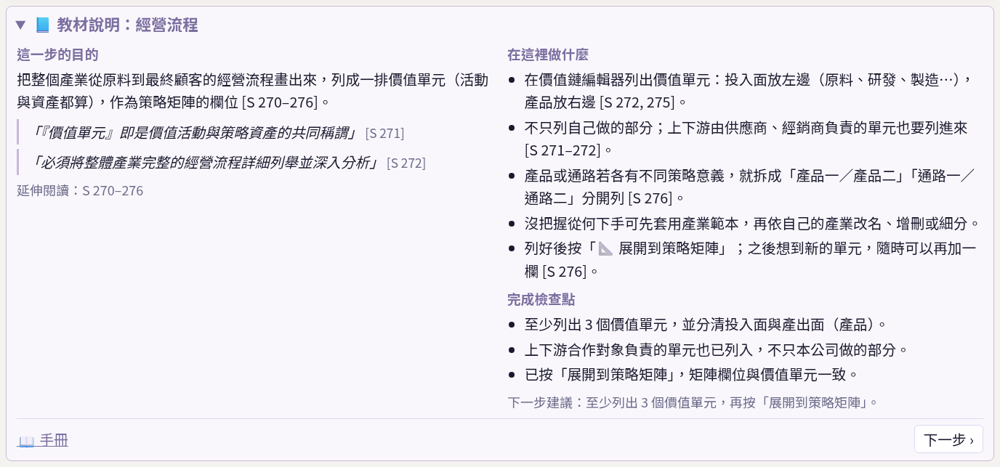
用網址直接開某一步
網址後面加 #step-1～#step-6 可直接開到對應 tab，例如 index.html#step-4 開在 ④ 前提驗證。切 tab 時網址也會跟著改，方便複製給同學或放進教材。
3. 專案列（存檔、載入、匯出、配色、範例、重設）
頁首下方的「專案」列，放的是整個專案層級的操作，不屬於任何一步。這一列在頁面往下捲動時會固定在視窗頂端，在哪個 tab 都能存檔或匯出。

- 💾 存檔／📂 載入：把整張策略矩陣存成 JSON 檔、讀回（見 3.1）。
- 📊 匯出 PPTX：產生可編輯的 PowerPoint（見「匯出 PPTX」）。
- 🎨 配色：下拉選單，切換價值鏈、策略矩陣與匯出 PPTX 的配色（見「產業矩陣切換與配色」）。
- 📚 載入範例…：載入書上的完整範例（見 3.2）。
- 🔄 重設：清除瀏覽器裡的自動存檔，回到預設狀態。
3.1 存檔／載入／重設
- 💾 存檔：把整張策略矩陣（價值鏈、欄位、策略構想、箭頭、策略點描述、前提、行動計畫、配色、目前 tab）存成
<策略名稱>_存檔.json。 - 📂 載入：選擇之前存的 JSON 檔還原。
- 🔄 重設：清除瀏覽器裡的自動存檔，回到預設狀態；會先確認，且無法復原。
瀏覽器自動存檔
工具會在你操作時，自動把目前內容存在這台電腦的瀏覽器裡（localStorage），下次用同一個瀏覽器開啟網頁時會自動還原。但這只是「暫存」：換電腦、換瀏覽器、使用無痕視窗，或清除瀏覽器資料後，內容都會不見。
3.2 載入範例
想先看一份完整的策略長什麼樣子，可以載入內建範例。
- 在「專案」列按 📚 載入範例… 下拉選單。
- 選一個範例：網路書店 A 公司 或 晶圓代工 T 公司（內容依《策略管理新論》Ch9 案例改寫）。
- 跳出確認視窗，按「確定」後會取代目前的價值鏈、策略構想與箭頭；載入前請先「💾 存檔」備份。
範例已包含六步的完整內容：價值鏈、策略點描述、箭頭與策略模組、前提（含關鍵前提與燈號）、行動計畫，以及網路書店的競爭者構想（連鎖書店），可以逐個 tab 查看。載入後可直接修改、匯出，或按「↩ 復原」回到載入前。
4. ① 經營流程
第一步把整個產業從原料到最終顧客的經營流程畫成價值鏈，作為策略矩陣的欄位。這個 tab 只有「策略名稱與說明」與「價值鏈」兩塊，不顯示矩陣。網址直連：#step-1。
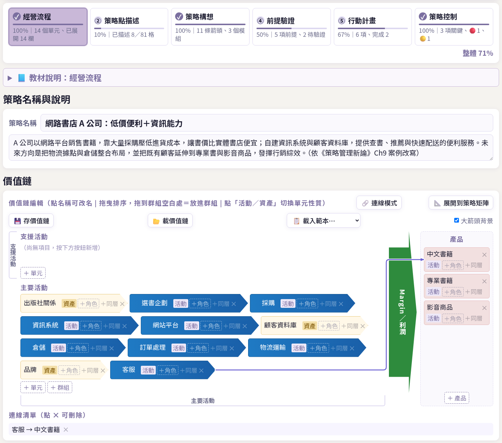
4.1 策略名稱與說明
- 策略名稱：會用在存檔檔名（
<策略名稱>_存檔.json、<策略名稱>_價值鏈.json）與匯出的 PPTX 標題。 - 說明：可以用格子代號寫成一段文字，例如「…為連鎖診所通路製造高階超音波設備(A24)…」；③ 的「策略句型」也能一鍵填進來。
輸入後會自動暫存。
4.2 價值鏈編輯
價值鏈分成三個區：上方的支援活動、下方的主要活動，以及最右邊（Margin／利潤箭頭右側）橫排堆疊的產品。展開到矩陣時，這些單元會成為矩陣的欄位。

新增與刪除
- 支援活動區最後的 ＋ 單元：加一個支援活動（支援活動區只能放單元，不能放群組）。
- 主要活動區最後的 ＋ 單元、＋ 群組：加一個單元或一個群組（群組是把相關的子項歸在同一大類下，如「研發」下有「產品設計」「打樣」）。
- 每個方塊上的 ＋同層：在它旁邊加一個同層的新方塊；群組還有 ＋子項，在群組內加子項。
- 方塊上的 ✕：刪除。刪除有內容的群組會先跳出確認視窗。
改名
直接點方塊上的名稱就能修改，按 Enter 或點別處即確定（名稱最多 20 字；過長會自動換行）。
活動／資產
每個單元右側有「活動」或「資產」標籤，點一下就切換。資產方塊以淡黃色顯示，代表這個單元是企業擁有的資源（如品牌）而非一個流程步驟。

拖曳排序
- 按住方塊拖到另一個方塊上：放在目標的前半就插到它前面，放在後半就插到它後面；畫面上會出現虛線空位預覽。
- 拖到群組的空白處＝放進該群組的最後面。
- 不能跨區（例如主要活動不能拖到支援活動）。
大箭頭背景
價值鏈工具列右側的「大箭頭背景」勾選框，可顯示／隱藏右側「Margin／利潤」的大箭頭背景（只影響價值鏈的外觀）。

4.3 價值單元角色
每個價值單元方塊上，「活動／資產」旁邊有一個 ＋角色 標籤，點一下會依序循環：一般 → 半成品 → 主導 → 影響者 → 一般。
- 半成品：流程中途的產出不再往下加工，部分直接賣給其他產業。
- 主導：由誰主導整條上下游、承擔風險並享受利潤，其他階段只是代工。
- 影響者：不直接買賣、卻左右採購決策的單位（如政府主管機關、互補業者）。
設了角色的單元，展開後在矩陣表頭與匯出的 PPTX 都會帶〔角色〕標記。價值鏈的「📋 載入範本…」「理論骨架」有三個範本：半成品外售流程、仲介型經營流程、多重產業共用市場，可當成這幾種特殊結構的起點。
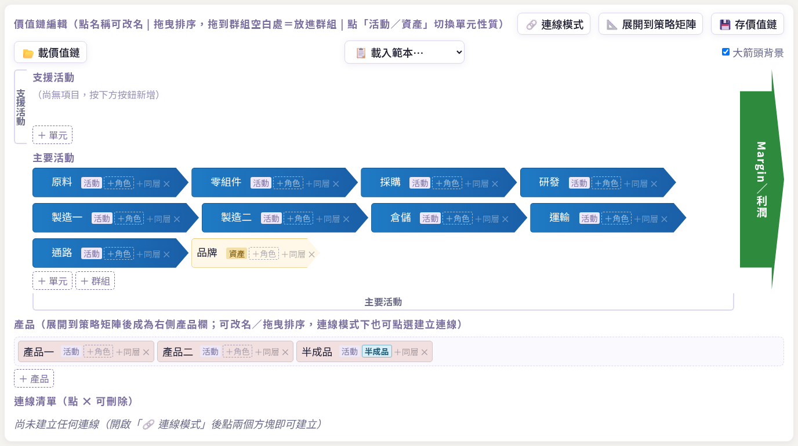
4.4 載入範本
價值鏈工具列的 📋 載入範本… 下拉選單，內建以下範本，選一個即可套用：
- 生醫：醫療器材製造、藥廠在台銷售、連鎖藥局、連鎖復健科診所、連鎖醫美診所、醫療設備代理
- 其他產業：工業電腦、醫師網紅經紀、原物料製造、連鎖加盟
- 理論骨架：通用基本價值鏈、半成品外售流程、仲介型經營流程、多重產業共用市場
載入範本會取代目前整條價值鏈（含產品），因此會先跳出確認視窗。載入後矩陣不會自動更新，要再按「📐 展開到策略矩陣」才會套用。範本只是起點，載入後可自由改名、增刪。
另外 💾 存價值鏈 會把目前價值鏈存成 <策略名稱>_價值鏈.json，📂 載價值鏈 可讀回，方便在不同專案間重複使用同一條價值鏈。
4.5 價值鏈連線
價值鏈連線用來標示兩個方塊之間的順序或關係（例如「產品設計 → 試產」）。
- 按 🔗 連線模式 開啟（按鈕變成紫底白字，提示文字改變）。
- 點第一個方塊（起點，變成黃色）。
- 再點第二個方塊（終點），就建立一條連線。若再點同一個方塊則取消起點。
- 做完再按一次「🔗 連線模式」關閉，回到平常的編輯狀態。

已建立的連線會畫成細箭頭，並列在價值鏈下方的「連線清單」，點 ✕ 可刪除。同一對方塊（相同方向）不能重複連線，重複時會跳出提示。

連線的走線規則
連線會自動避開方塊：相鄰的方塊畫直線；同一列但不相鄰時，從方塊上方繞過去；跨列的連線則走列與列之間的通道（必要時走側邊通道），不會斜穿其他方塊的名稱。
4.6 產品欄
價值鏈最右邊、Margin／利潤箭頭右側的「產品」直欄，放的是這張矩陣要分析的產品（或產品線）；展開後會成為矩陣右側的產品欄。螢幕較窄（800px 以下）時，產品欄改排在價值鏈圖下方、橫向排列。
- ＋ 產品：新增一個產品。
- 產品方塊的文字橫排：第一行是名稱與 ✕（刪除），名稱太長會自動換行；第二行是「活動／資產」「＋角色」與 ＋同層。點名稱可改名；可上下拖曳排序。
- 連線模式下，產品也能點選來建立連線。

4.7 展開到策略矩陣
按價值鏈工具列的 📐 展開到策略矩陣，會把價值鏈的所有單元依序變成矩陣的欄位（價值鏈至少要有 2 個單元，否則會提示無法展開）。這是 ① 的最後一個動作；展開後到 ② 就能看到矩陣。

對話框內容
- 支援活動放：選「最前面（預設）」或「主活動後面」，決定支援活動欄位排在矩陣的左側或接在主要活動之後。
- 欄位數：顯示展開前 → 展開後的欄位數。
- 會被刪除的箭頭：若已畫的箭頭指到價值鏈裡已不存在的欄位，那些箭頭會被刪除，這裡會列出來。
- 格子代號有變的：欄位增減或換順序後，格子代號（如 A05）可能改變，箭頭會跟著搬到同名欄位。
按「確定」套用，「取消」則什麼都不改。

5. ② 策略點描述
矩陣的每一格是一個「策略點」（投入欄或產出欄 × A–F 六列）。第二步是逐格了解現況：切到這個 tab 時會自動進入「📝 描述策略點」模式，點格子就在矩陣右側的面板（窄螢幕在矩陣下方）填寫。網址直連：#step-2。
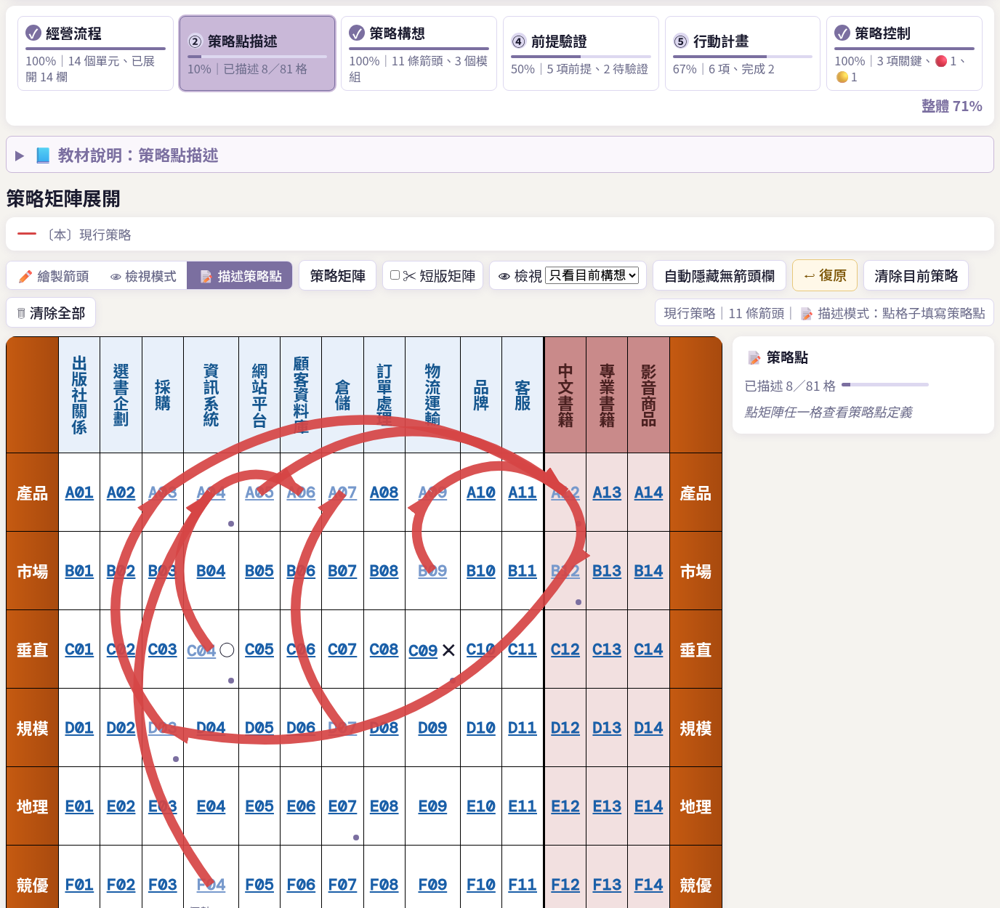
5.1 矩陣基本操作
② 到 ⑥ 共用同一張策略矩陣：欄是 ① 展開來的價值單元（右側是產品欄），列是 A 產品、B 市場、C 垂直、D 規模、E 地理、F 競優。每格有代號（如 A05），說明與句型都用這個代號指稱格子。

- 模式：✏️ 繪製箭頭（點兩格畫箭頭）、👁 檢視模式（純瀏覽、避免誤點）、📝 描述策略點（點格子填描述）。切 tab 時會自動切到該步適合的模式，也可以自己換。
- 策略矩陣：切換列標籤為產業矩陣用語（見「產業矩陣切換與配色」）。
- 👁 檢視：切換矩陣上要畫哪些策略構想的箭頭（見 6.1）。
- ↩ 復原、清除目前策略、🗑 清除全部：見 6.2。
5.2 短版矩陣
策略矩陣欄位很多時，可以只留跟產品特色有關的欄位。操作列的 核取方塊打勾後，進入短版模式：
- 自動隱藏無箭頭欄：把所有策略構想都沒有箭頭起訖的投入欄一次隱藏，並自動開啟短版。
- 短版開啟時，投入欄表頭右上角會出現 ✕，可個別隱藏該欄（產品欄不能隱藏）。
- 矩陣上方（操作列下面）出現「✂ 已隱藏 N 欄」的 chip 列，點 chip 可把該欄叫回來；按「全部顯示」會回到完整矩陣（同時關閉短版）。
- 格子代號不變（隱藏 A03 欄，其他格子仍是原來的代號），句型與說明裡的代號不會亂掉。
- 含隱藏欄的箭頭在短版中不顯示；匯出 PPTX 時也只畫可見欄。
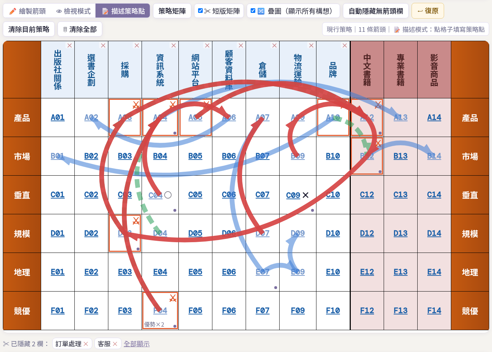
5.3 策略點面板與填寫進度
- 在 ② tab（「📝 描述策略點」模式）點矩陣上任一格。
- 矩陣右側的面板（窄螢幕在下方）顯示該格的定義（依投入欄／產出欄 × 列不同，附教科書頁碼）與引導問題。
- 在文字框填寫描述；有些列有專用選項：C 列（垂直整合）可選 ○ 自製、✕ 外包、◐ 局部整合（再點一次取消），F 列（競爭優勢）可勾選優勢基礎（能力、獨佔、時機、財力、綜效、關係、資訊科技）。
- 面板右上角顯示「已描述 N／總格數」與進度條，tab 列上 ② 的完成度也跟著更新。
已填的格子會有小圓點標記；C 列格子顯示 ○✕◐，F 列顯示「優勢×N」。產品欄的 C 列不適用，面板會說明。策略點面板在 ④ 前提驗證 tab 也看得到，方便邊看描述邊寫前提。
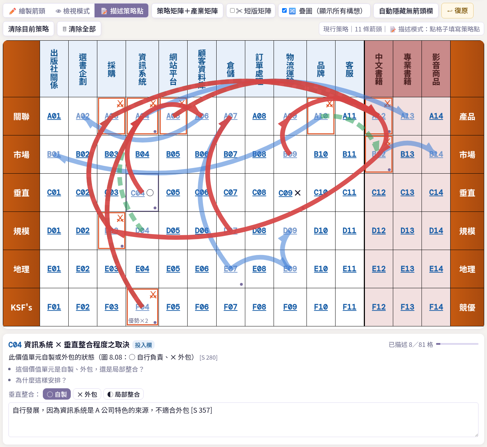
6. ③ 策略構想
第三步用箭頭表達策略要素之間的因果，把相關的箭頭圈成模組。切到這個 tab 會自動進入「✏️ 繪製箭頭」模式；tab 內由上而下是：已繪製的箭頭（含模組、要素、前提、句型）、策略構想列、圖例與矩陣。網址直連：#step-3。
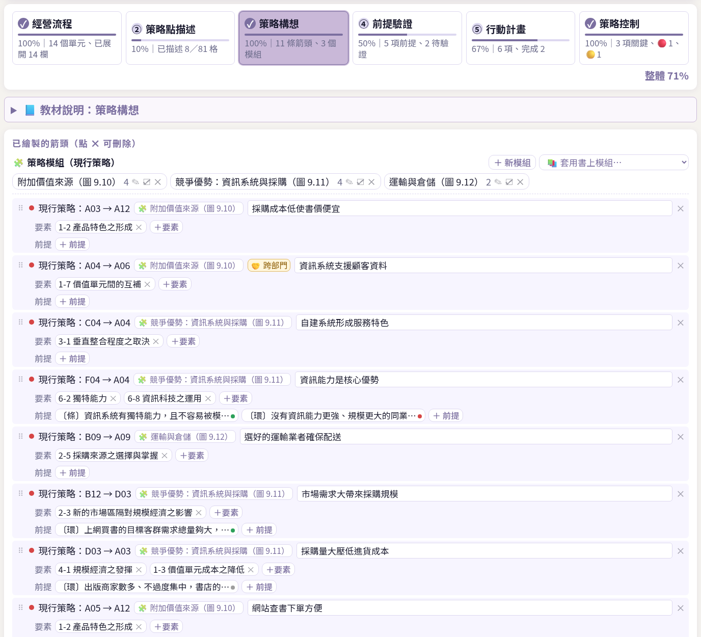
一張策略矩陣可以同時比較多個「策略構想」，每個構想用一種顏色的箭頭表示。策略構想列在 ③ 到 ⑥ 都看得到，可以隨時切換目前構想。

- 選取：點標籤的空白處，設為「目前策略」，之後畫的箭頭都屬於它。
- 改名：點名稱直接修改（最多 14 字）。
- 刪除：點 ✕，至少要保留 1 個。
- 新增：在「新增策略名稱」輸入框打上名稱後，按 ＋ 新增 或 Enter，最多 8 個。
6.1 構想分型與檢視切換
策略構想的名稱前有一個短標，標示它的類型，點一下就循環切換：
- 〔本〕本公司現行策略；〔未〕未來方向；〔競〕競爭者的策略構想。
- 新增構想時，「＋ 新增」旁的下拉選單可先選好類型。
- 競爭者的箭頭以虛線畫出。
- 操作列的 👁 檢視 下拉選單決定矩陣上畫哪些構想：只看目前構想（預設）、目前＋競爭者（目前構想加上所有〔競〕構想）、全部構想。非目前構想變淡；下方圖例只列有畫出的構想。
- 本公司與競爭者用到同一個策略點的格子，會標上 ⚔，稱為「對陣點」（「只看目前構想」時不標）；對陣點的判斷在 ④（見 7.2）。
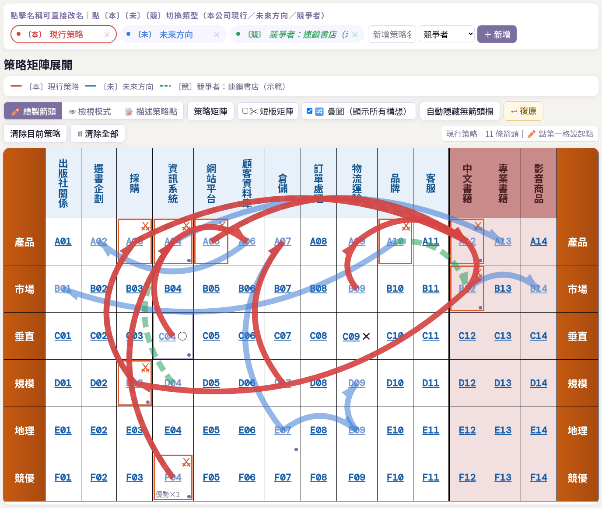
6.2 畫箭頭、補充說明、排序、復原、清除
畫箭頭
在 ③ tab，操作列的 ✏️ 繪製箭頭 已是選取狀態：
- 點矩陣上的起點格，該格變成黃色。
- 再點終點格，就畫出一條帶箭頭的連線，顏色為目前策略的顏色。
- 若想取消起點，再點一次黃色的格子。

箭頭清單與補充說明
tab 上方的「已繪製的箭頭」列出目前策略構想的所有箭頭，格式為「策略名：A04 → A05」。
- 補充說明…輸入框：寫下這條箭頭的意義，匯出 PPTX 時會放進該箭頭的步驟頁。
- ⠿ 拖曳：調整順序，只能在同一個策略內排序（順序會影響 PPTX 步驟頁的先後）。
- ✕：刪除這條箭頭。
- 每條箭頭下方還有「要素」列（見 6.4）與「前提」列（見 7.1）。
復原與清除
- ↩ 復原：還原上一個動作，最多 80 步。可復原新增／刪除／排序箭頭、刪除策略、清除、展開到策略矩陣；價值鏈的編輯不能復原。
- 清除目前策略：清掉目前選取策略的所有箭頭，不會詢問，但可以用「↩ 復原」救回。
- 🗑 清除全部：清掉所有策略的所有箭頭，會先確認。
6.3 策略模組
「已繪製的箭頭」區頂端的模組列，可以把目前策略構想中相關的幾條箭頭圈成一個有名字的策略模組（例如「競爭優勢：資訊系統與採購」）。
- 每個模組是一個 chip，顯示名稱與箭頭數；chip 上 ✎ 改名、☑ 勾選成員箭頭、✕ 刪除。
- ＋ 新模組：輸入名稱後，在箭頭清單勾選要圈入的箭頭。
- 📚 套用書上模組…：下拉選書上的五個模組（降低成本、自創品牌提升規模、工廠外移、品牌與人才資金、特許權與設廠時效）；跳出對話框，把模組裡的角色對應到你自己的欄位後套用。
- 屬於模組的箭頭，在清單上會有 🧩 小標；策略句型也會依模組分組。
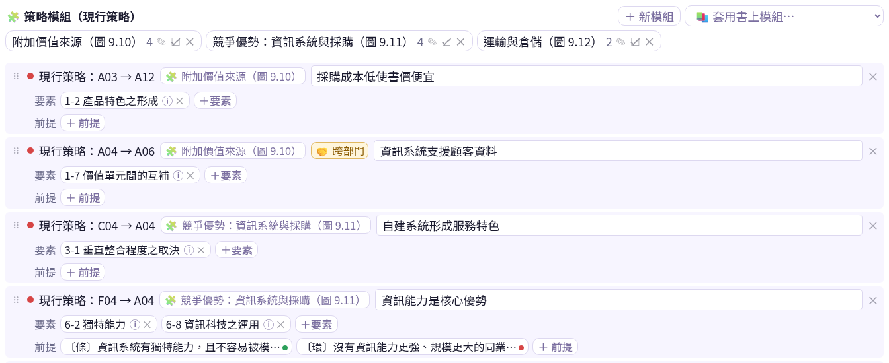
6.4 策略要素標記
每條箭頭可以標上「策略要素」（《策略管理新論》Ch9 的 51 項要素，例如「1-3 價值單元成本之降低」），用來說明這條箭頭的策略意義。
- 在「已繪製的箭頭」清單中，每條箭頭下方有一列要素標籤。
- 按 ＋要素 展開勾選面板；上方「建議（依箭頭形狀）」會依箭頭的形狀（例如同欄向下、跨欄向右）先列出可能適用的要素，下方可從全部 51 項中勾選。
- 沒標要素的箭頭，若有建議，會以淡色字顯示「建議：…」，直接點要素編號即可加入。
- 標籤、勾選面板與建議旁都有 ⓘ：點開「要素說明卡」，看迷你矩陣簡圖（反灰格與箭頭）、簡易說明、書上範例與頁碼；滑鼠停在要素上只顯示簡短名稱。
- 點標籤上的 ✕ 可移除該要素；已標的要素會接在補充說明後面，一併進 PPTX 步驟頁。
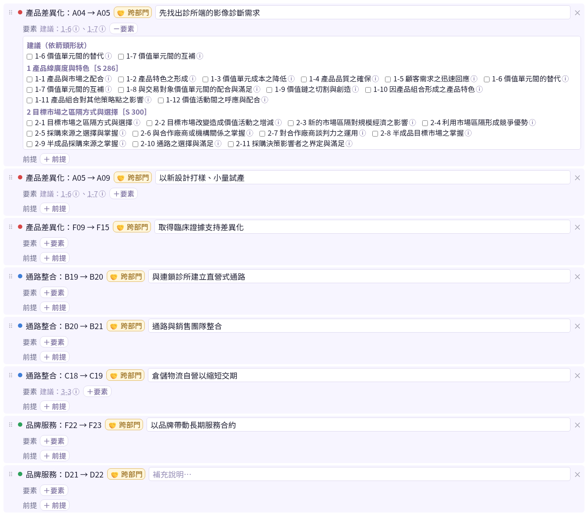
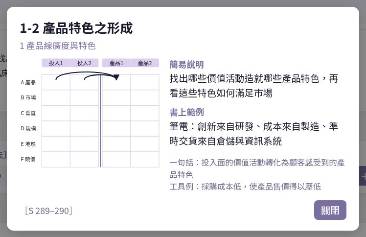
6.5 策略句型產生器
箭頭清單下方的「📝 策略句型」會依各條箭頭自動組成策略敘述（相連的箭頭會合併成匯流句或鏈式句）。
- 點開 📝 策略句型 展開句型框，查看目前策略的句子。
- 按 📋 複製 把句子複製到剪貼簿，貼到報告或簡報。
- 按 ⬇ 填入說明 把句子寫進 ① 的「策略說明」欄。
匯出 PPTX 時，步驟頁與最後的總覽頁也會附上策略句型。
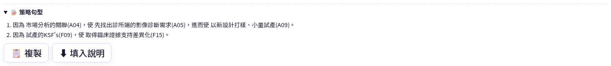
7. ④ 前提驗證
每個策略動作或因果關係都有前提。第四步檢查這些前提是否成立，並依方案彙整成 SWOT；同時檢查本公司與競爭者正面交鋒的對陣點。切到這個 tab 會進入「👁 檢視模式」，矩陣右側（窄螢幕在下方）仍有策略點面板可參考。網址直連：#step-4。
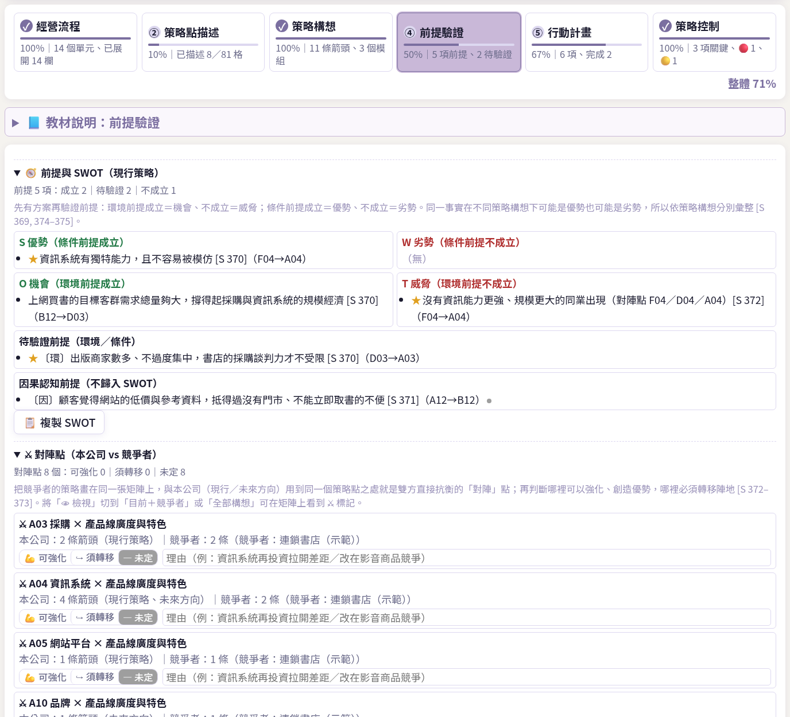
7.1 前提與 SWOT
前提是掛在箭頭上的。在 ③ 的箭頭清單，每條箭頭的「前提」列按 ＋ 前提 新增一個前提 chip，點 chip 展開編輯：
- 類型：環境、條件、因果認知（因果認知為本工具自訂類別）。
- 內容：一句話寫下前提。
- 成立度：成立、待驗證、不成立等；chip 尾端的小圓點顯示狀態。
④ tab 的「🧭 前提與 SWOT」會把目前策略構想的所有前提，依類型與成立度彙整成 S／W／O／T 四象限，另列「待驗證」與「因果」清單；按 📋 複製 SWOT 可貼到報告。待驗證的前提都釐清後，tab 列上 ④ 就會到 100%。
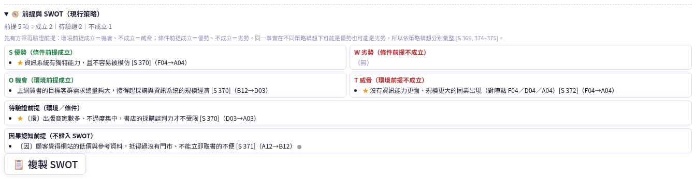
7.2 對陣點
「⚔ 對陣點（本公司 vs 競爭者）」折疊區，列出本公司（現行／未來方向）與競爭者構想用到同一個策略點的格子、雙方各有幾條箭頭，並讓你逐點判斷：可強化（我方有機會創造優勢）、須轉移（必須轉移陣地）或未定，並寫下理由；可按 📋 複製。要看到對陣點，至少要有一個〔競〕構想（見 6.1）。
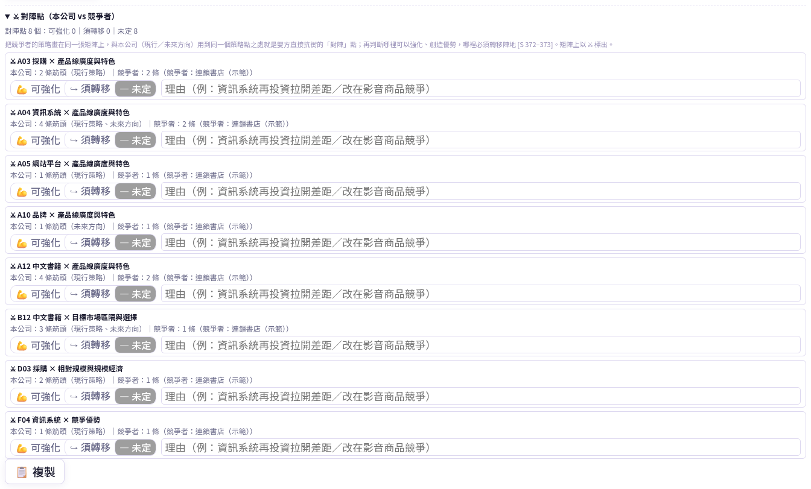
8. ⑤ 行動計畫
第五步與形成策略的方向相反：把選定的策略構想拆回箭頭與要素，變成可執行的行動項目。切到這個 tab 會進入「👁 檢視模式」。網址直連：#step-5。
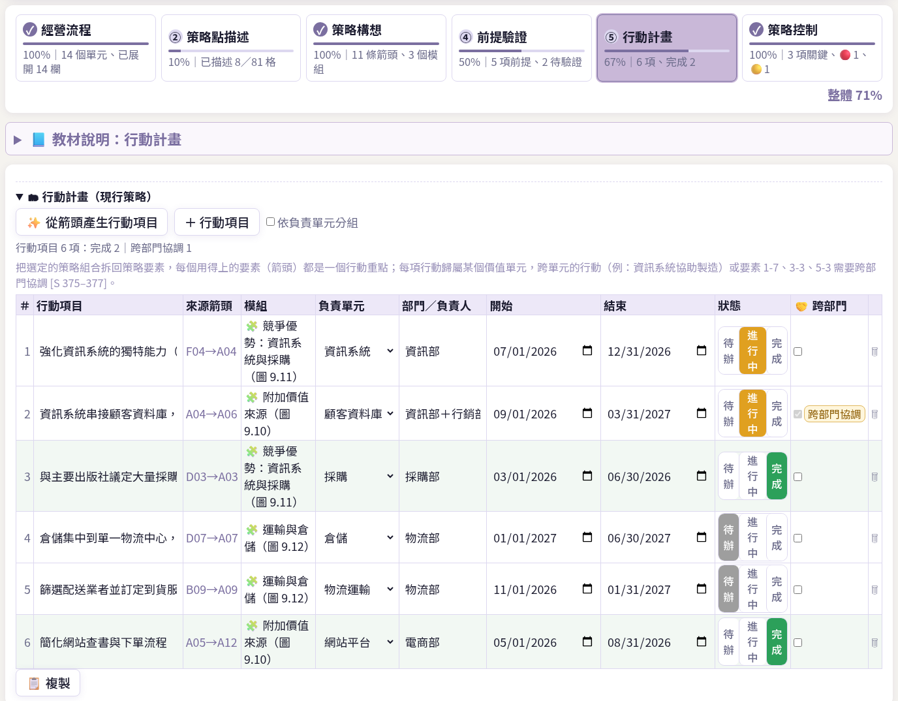
- ✨ 從箭頭產生行動項目：為每條還沒有行動項目的箭頭各建一筆；也可按 ＋ 行動項目 手動新增。
- 表格欄位：行動項目、來源箭頭、模組、負責單元（下拉選價值單元）、部門／負責人、開始與結束日期、狀態（待辦／進行中／完成）、跨部門。
- 依負責單元分組 打勾後，表格依負責單元分組顯示。
- 跨欄箭頭或牽涉特定策略要素時，會自動標 🤝 跨部門協調（箭頭清單上也會有小標）；可手動勾選或取消。
- 📋 複製 複製整份行動計畫。
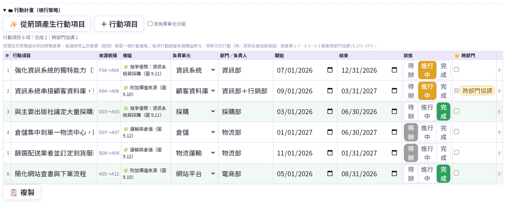
9. ⑥ 策略控制（前提控制表）
策略定案後，要持續檢查前提是否仍成立。第六步的「🚦 策略前提控制表」列出前提，讓你挑出關鍵前提來追蹤。網址直連：#step-6。
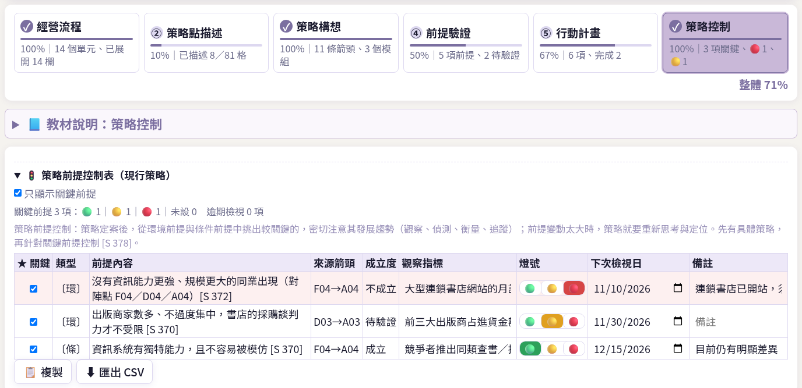
- 勾選最左欄的 ★ 關鍵，把前提納入控制；也可打勾「只顯示關鍵前提」。
- 為關鍵前提填觀察指標（要看什麼數據來偵測）、燈號（綠／黃／紅）、下次檢視日與備註。
- 檢視日已過的列，日期以紅字顯示（逾期）；上方統計會顯示各燈號數量與逾期項數。
- 📋 複製 複製表格，⬇ 匯出 CSV 下載成試算表可開啟的檔案。
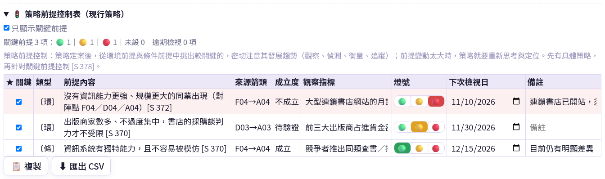
10. 產業矩陣切換與配色
產業矩陣切換
操作列的 策略矩陣 按鈕按一下會切成「策略矩陣＋產業矩陣」，矩陣左側的列標籤改為產業矩陣用語：關聯、市場、垂直、規模、地理、KSF's（再按一次切回）。② 到 ⑥ 共用同一張矩陣，所以切換後每個 tab 都一樣。

配色
配色在「專案」列的 🎨 配色 下拉選單，共六組：價值鏈同調（藍橘，預設）、標準規範（黃藍）、冷色簡約、高對比黑白、莫蘭迪柔和、森林大地。選一個即可套用。
- 換色範圍：價值鏈、策略矩陣與匯出的 PPTX 會一起換色；策略構想（各條箭頭）的顏色不變。
- 顏色對應：價值鏈主要活動群組內的子項，底色與字色和矩陣的細項欄一致；矩陣上屬於支援活動的欄位，表頭使用支援活動的顏色（預設為橘色系）。
- 會被記住：你選的配色會記在瀏覽器裡，下次開啟仍是同一組，也會寫進「💾 存檔」的 JSON 檔。
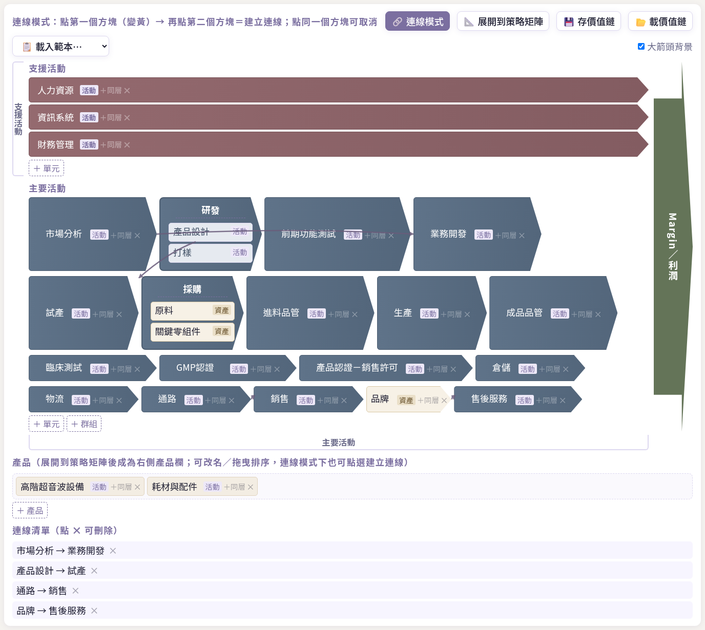
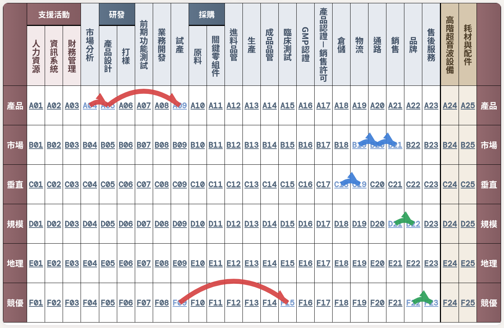
11. 匯出 PPTX
按「專案」列的 📊 匯出 PPTX（在哪個 tab 都可以），工具會產生一份可編輯的 PowerPoint，內容依序為：
- 價值鏈頁（①）。
- 每一條箭頭一張步驟頁（顯示該步驟的矩陣位置，並帶入你寫的「補充說明」）。
- 總覽頁。
- 總覽頁之後依序接以下新頁（沒有資料的頁會跳過，並在狀態列提示）：策略點描述頁（②）、策略模組頁（③，每個模組一張，含矩陣與句型）、前提／SWOT 頁與對陣點頁（④，競爭者以虛線）、行動計畫頁（⑤）、前提控制頁（⑥）。
匯出過程會顯示進度視窗，完成後瀏覽器會下載檔案；簡報會使用你目前選的配色。短版矩陣開啟時，只會畫可見的欄位。想讓簡報更好講，建議先替每條箭頭寫好補充說明、排好順序。
12. 常見問題
- Q：價值鏈改錯了，可以按「↩ 復原」嗎？
- 不行。「↩ 復原」只管矩陣這一側的動作（箭頭、策略、清除、展開）。價值鏈的編輯不能復原；建議大改前先按「💾 存價值鏈」備份。
- Q：在 ① 經營流程看不到策略矩陣？
- 這是設計如此：① 只編價值鏈，矩陣從 ② 開始才顯示。改完價值鏈記得按「📐 展開到策略矩陣」，再切到 ② 或 ③。
- Q：在 ④⑤⑥ 點矩陣格子沒有反應？
- 這幾個 tab 預設是「👁 檢視模式」，避免誤畫箭頭。要畫箭頭請回 ③，或在操作列自己切回「✏️ 繪製箭頭」。
- Q：箭頭清單、句型在哪？
- 都在 ③ 策略構想 tab。前提也是在 ③ 的箭頭清單上新增，④ 負責彙整。
- Q：策略構想最多幾個？
- 最多 8 個，名稱最多 14 個字；至少要保留 1 個。
- Q：可以復原幾步？
- 最多 80 步。
- Q：我改了價值鏈，為什麼矩陣沒有跟著變？
- 價值鏈與矩陣是分開的，改完要再按「📐 展開到策略矩陣」才會更新。
- Q：展開後有些箭頭不見了？
- 如果箭頭指向的欄位名稱在價值鏈裡已經不存在，展開時就會刪除那條箭頭（對話框會先列出）。不想要的話按「取消」，或展開後按「↩ 復原」。
- Q：重新開啟網頁，我的資料不見了？
- 自動存檔只存在瀏覽器內。換瀏覽器／電腦、無痕模式、清除瀏覽器資料、或按了「🔄 重設」都會消失。重要資料請用「💾 存檔」另存檔案。
- Q：載入範本後，矩陣為什麼沒變？
- 載入範本只換價值鏈；矩陣要按「📐 展開到策略矩陣」才會更新。
- Q：手機或平板可以用嗎？
- 可以瀏覽，但畫箭頭、拖曳排序在電腦上比較順手，建議用電腦操作。